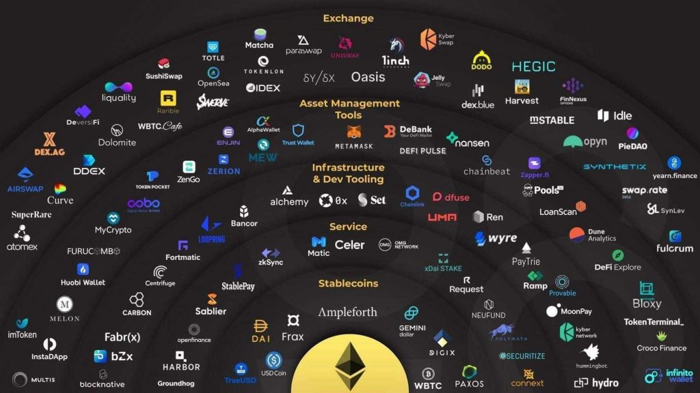
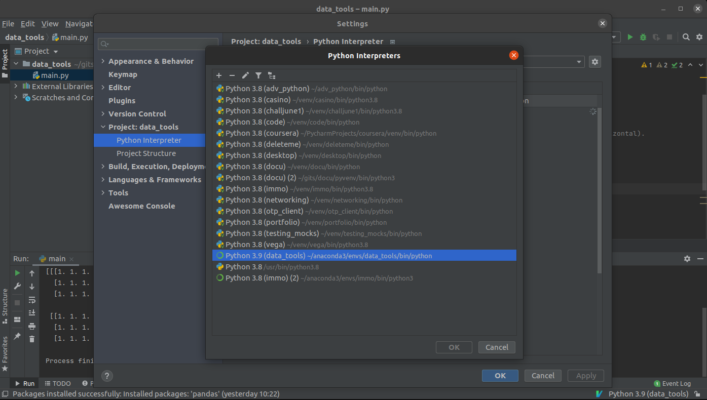

techtalks¶
Decentralized Finance¶
defi projects¶
what is defi - smart contracts
stablecoins - automated market makers
lending - staking
non-custodial - yield farming
dao’s - data
demos - discuss
what is defi¶
definition¶
Decentralized finance—DeFi—refers to the shift from traditional, centralized financial systems to peer-to-peer finance enabled by the Ethereum blockchain.
From stablecoins, to lending and borrowing, to prediction markets, margin trading, payments, insurance, gaming, and NFT marketplaces, the DeFi ecosystem now represents an expansive network of integrated protocols and financial instruments worth more than $70 billion USD
open to everyone
no 3rd parties
smart contracts¶
A smart contract is a self-executing contract with terms of the agreement between buyer and seller being directly written into lines of code. The code and the agreements lives on a distributed, decentralized blockchain. The code controls the execution, and transactions are trackable and irreversible
Smart contracts permit trusted transactions and agreements to be carried out among disparate, anonymous parties without the need for a central authority, legal system, or external enforcement mechanism
code is law?

stablecoins¶
A stablecoin is a form of cryptocurrency that minimizes volatility
dai (pegged to $ with collateral in crypto)
usdt (fiat backed)
usdc (fiat backed) commodity backed
algo stablecoins - ampleforth (rebasing)
automated market makers¶
liquidity pools (replaces orderbooks, incentivized)
concentrated liquidity uniswap v3
pools of tokens that are locked in a smart contract. They are used to facilitate trading by providing liquidity and are extensively used by some of the decentralized exchanges a.k.a DEXes
youtube finematics on LP’s https://youtu.be/cizLhxSKrAc
staking¶
non-custodial¶
non-custodial refers to a service in which the funds or assets aren’t possessed by a platform or third-party
at any point during a transaction or service period everything occurs through trustless smart contracts: the complex self-executing series of code that power blockchain networks
this is in contrast to custodial services, which take possession of a user’s funds or assets for safekeeping, management, etc
Non-custodial services are considered the hall-mark and prime example of decentralization and non-reliance to intermediaries. Crypto proponents prefer them over custodial services since the latter incurs more risks
dao’s¶
data¶
the implications of DeFi for data science
cere: https://cere.network/
ocean protocol: https://oceanprotocol.com/
oasis labs: https://www.oasislabs.com/
…
demos¶
eg. coinbase %
acala testnet: https://apps.acala.network/
uniswap: https://app.uniswap.org/#/swap
paralell finance: https://testnet.parallel.fi/#/overview
defivid finematics
discuss¶
the merge of social networks - defi - NFTs - data
pycharm you¶
agenda¶
find action
cool shortcuts
configuring python interpreter
debugging @work
meditation
installing plugins
find action¶
cool kids on the block¶
in-place refactoring¶
rename? -> alt + enter
care to comment?¶
(un)comment: ctrl + /
shakespeare¶
todo or not todo: # todo: gonna forget this
tdd w00t¶
fire up tests: ctrl + shift + t
import hell¶
optimize imports: ctrl + alt + o
F* strings¶
print(“some big var”) -> curly enter